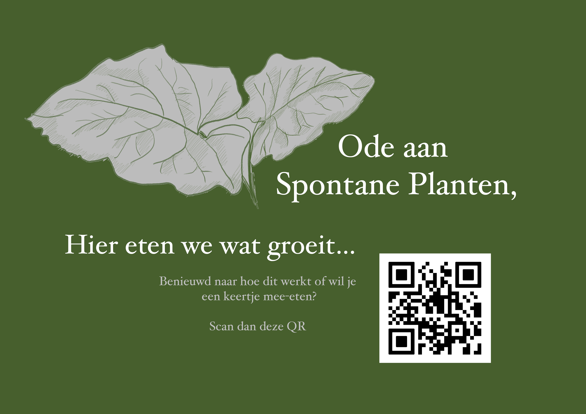

Dit bordje staat bij mijn moestuin, een ware ontploffing van een divers buffet aan wilde planten. Althans, dat is hoe ik het zie — en daarom bedacht ik om hier iets leuks, lekkers en leerzaams mee te doen: een Ode aan de Spontane Planten-diner.
Iedereen is welkom! Dus heeeel leuk als je komt. Laat je verrassen door de wildernis.
Na inschrijving ontvang je meer informatie over de locatie en de tijd. De kosten voor het diner zijn op vrijwillige bijdrage.
Datum: 26 juni · Locatie: Wageningen
Liefs, Marijne
← Terug